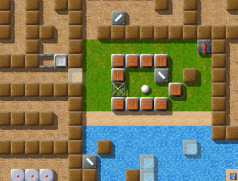
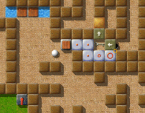

Level of the MonthEach month, we take a closer look at excellent Enigma levels. Excellent levels are those with the highest average user ratings and the greatest number of ratings altogether. Thus it is your vote that determines the Level of the Month. So please rate the levels you play and do not forget to submit your ratings together with your scores at the end of each month. You can find all previous Levels of the Month in our archive. June 2007: “Labyrinth of Puzzles” by Jacob ScottDoes anyone here think that old levels are outdated? This month we visit one of Enigma's real classics, a level itself directly inspired by Oxyd. Written by the most productive level author Enigma ever witnessed, topped only by Meinolf Schneider himself. The climax of Jacob's early levels: Don't get astray in the “Labyrinth of Puzzles”!

Enigma IV # 19
Indeed, I already expected “Labyrinth of Puzzles” to become the Level of May 2007 -- only to be overrun by the newcomer “The Aztec Temple”. “Labyrinth of Puzzles” gathered 7 votes, averaging to 9.00, whereas “The Aztec Temple” was rated by only 3 gamers. In our archives section we can compare all previous Levels of the Month with their current ratings -- this will be a spectacular race between the newcomer and the classic to follow in the next months! “duffy - diabolically unfolding frustration for you”the nickname/filename(s) was obviously not chosen by chance. i mean we are talking about the man who has written levels that are so diabolical that they make me shake just thinking about them now. island of safety, the alien glyph trilogy, the document, security guards, bad nightmare, worse nightmare, double-spiral and of course the unforgetable labyrinth of puzzles. [Interesting mixture … you forgot the “Seed Puzzles”! ;-] this man has had me sitting there staring into the screen thinking of a way to beat his evil landscapes for hours and hours. i hate duffy! i hate him for creating some of the most evil levels i have encountered in enigma. … at the same time i also love duffy! i love him for exactly the same reason. duffy has inspired me in many ways with many of his levels to try and create my own levels. i remember when i first saw labyrinth of puzzles and thought to myself 'that is gonna be an easy one max 5 minutes and done' … that was until i encountered the first problem with the trigger in the water and no way of getting at it easyly … this continues throughout the whole level. you start things and stop things again because you can't find the last missing bit to the puzzle. it causes frustration. duffy has done many many things that have shown me what you can do to make a level look easy and then unfold to a true nightmare. i know i will never be able to write levels like that myself and it sure makes me wonder what must be going on in his mind. how in the blue hell can you plan a level that will cause the player to almost start crying ? … it must have taken weeks or longer to think of all this kind of stuff. even though labyrinth of puzzles maybe an older level of duffy, i still think that there are not many people who can write a level TODAY that is as exciting and clever as labyrinth of puzzles. it is a timeless classic that has a well chosen name. the thing that i find so amazing, is that it is more or less two self contained levels combined into one. the whiteball has its own world and tasks to fulfill and so does the blackball. it is even still today a level that remains tricky and very complex all the way through it. the only thing where i keep thinking to myself 'why ?' is: he left half the level just empty. i bet if he had had more time then the empty half would also have been full of further tricky things. thanks duffy and please do continue making levels that 'lays the smackdown' on the players. your levels are, have been and will always be a great inspiration for me and my own experiments. “Labyrinth of Puzzles” is one of the few levels native to Enigma to use an Oxyd-compatibility mode. This means: Some mechanisms do not work as usual in Enigma, but more like in one of the old Oxyd games. You see this quite clearly when you open a lock with a key -- in “Labyrinth of Puzzles” you still have the key in your inventory afterwards. Jacob didn't choose this mode accidentaly. Moreover, one of his puzzles depends on this special mode, which might seem unfamiliar to less experienced gamers. Try “Seed Puzzle II” and “Ice-Bomb”, if you don't know what I mean. “It was one of the first 'hard' ones I attempted”Here are some more comments from our players: 'Labyrinth of Puzzles' is one of the most fun levels in Enigma, and certainly deserves to be nominated. When I first came across Enigma, which came with a version of Linux I had installed, I started playing at once and enjoyed it a lot. Several years ago I had an old black and white version of Oxyd which I rather liked, but Enigma beats it by far. I probably like this level because it was one of the first 'hard' ones I attempted. As I wasn't particularily good at Enigma, it was for me 'one of those hard levels I'll never beat anyway'. I actually got rather far, because this level isn't too hard at all, and certainly easier than the other levels of the month. What makes it easier is that the puzzles can't be too easily 'ruined' by doing a false move. That makes this a good training level for players who want to tackle the harder levels of this great game which are also very fun, such as 'Island Labyrinth' or 'Aztec Temple'. Keep up the good work, Jacob! From all the levels Jacob brought to us, “Labyrinth of Puzzles” surely is one of my favorite levels. Even as design and gameplay remind a lot of “Island Labyrinth”, here nevertheless are very own ideas to find. I enjoyed especially the team play of the two marbles in “Labyrinth of Puzzles”. At certain points the black marble is dependend on the white and vice versa. However, it's not at all obvious when and how the other marble has to help (like in many other levels). In addition, the degree of difficulty is exactly right. There are no frustrating “have to start all over again”-scenes, but one can solve one puzzle after the other and still be busy for a very long time. All in all I have to say, that it's levels like “Labyrinth of Puzzles” which are the reason for me to play Enigma. Many thanks for this great level, Jacob! I have not yet finished Labyrinth of Puzzles, but it is my favorite kind of landscape because it requires that I do many different things to complete it. I love yin-yang levels of all kinds anyway. I don't mind moving boxes, and this landscape has a few, and some sweet smaller puzzles within it. With the large landscapes, like this one and Island Labyrinth, I learned to make screenshots (from the Forum, like, duh!) and assemble them into a map to study as I make moves. A couple of friends like the hair-raising rotor and deaths' heads better than the puzzles, but I prefer these to rotors, fast or slow. “I put together what I did know into one connected challenge”There are remarkable similarities between “Labyrinth of Puzzles” and “Double-Spiral”: illmind already mentioned this one. They are two of the scarce levels using it-brush, both use fl-space, keys and disks; and the most important property: In both levels the white and the black marble start off in separated places, and must be brought together. If you read Jacob's explanations in detail, you can find out why:

One out of many puzzles
“Labyrinth of Puzzles” was only the 35th level I submitted and pretty much my second attempt at a labyrinth-type level. I was inspired by the huge and varied mazes of the old Oxyd games -- I remember exploring them for many hours, delighting in all of their little tricks. When I discovered Enigma four or five years ago I was enthralled, incredibly pleased to finally be able to play Oxyd again, but I noticed that it had a dearth of large, complex levels. Soon after I started playing Enigma I began writing levels, at first extremely crude (I manually set objects with coordinates -- not a good strategy for designing levels of any significant size), but increasingly refined my technique towards the goal of a level written in a similar style to the monstrous puzzle-filled mazes that had captivated me at a very early age. My first attempt at a level of this type turned out a lot too walled-off, with very clear distinctions between areas and only one actor (to be released, slightly modified, as “Pleasure Garden”), so I took the opposite path in “Labyrinth of Puzzles”: very few obvious sections and two balls to add to the difficulty, and keys/floppy disks/coins for gates to give it structure. Now that I look back at it after having designed many more landscapes, “Labyrinth of Puzzles” seems quite easy to complete, yet I think still enjoyable. It contains puzzles of varied types and sizes, but takes none of these to an extreme, hopefully offering everyone a fun and interesting challenge or two. As can be seen by the level's oddly-shaped boundaries, I had intended a slightly longer level, but when I reached the level's current bottom I didn't see any elegant way to extend the labyrinth and still preserve the feeling of continuity that I was aiming for throughout. This really was one of my first major undertakings as a level designer, with most of my earlier creations aimed at the exploration of one or two concepts in Enigma. I didn't know then what I know now, such as the behaviors of the more advanced items or how to code actions that deviated too much from the expected template, but I put together what I did know into one connected challenge -- something I would highly recommend to all new level authors, since it gives one insight into a completely different type of level. I have since written new composite landscapes, taking this idea a bit further, but I always enjoy returning to “Labyrinth of Puzzles” -- while it turned out fairly simple, I believe it makes for a pleasurable landscape and a varied style of level to play through. It definitely does! “Pleasure Garden”, by the way, was recently released with Enigma 1.01 as VI/95, and I'm sure everyone who liked “Labyrinth of Puzzles” will love to see and play this one. This and more new levels by Jacob, like “Temple of Gold” (VII/24)! One more thing: I want to thank Taztunes today, for he's the one to proofread all the LotMs since the beginning in March; many thanks, Taztunes! Greets, |